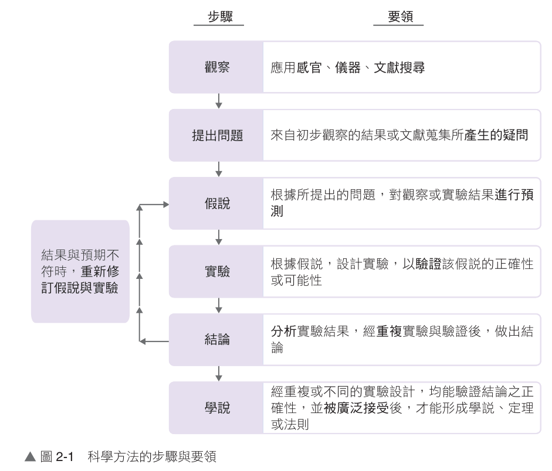

高中生物（全） 2-1 性狀的遺傳
科學方法
2-1.1 孟德爾的遺傳法則（第 1/22 頁）
💡 單元情境引言：你的眼睛是像媽媽還是爸爸呢？生物能產生後代，並將親代的特徵傳遞給子代，這種現象稱為遺傳。但是遺傳到底是以什麼方式、原理進行的呢？奧地利修道士孟德爾（Gregor Mendel）透過嚴謹精確的科學實驗，首次揭開了性狀傳遞的數學規律，奠定了現代遺傳學的核心基礎。
2-1.1 孟德爾的遺傳法則
一、生物學的科學方法
1. 研究生命現象的方法：生物學是對生命現象進行有系統的研究的科學，欲進行有系統的研究，需運用合理、精確的科學方法。
2. 科學方法的步驟與要領：包含觀察、提出問題、形成假說、設計實驗、數據分析、做出結論，經重複或不同實驗設計驗證被廣泛接受後，才能形成學說、定理或法則。若結果與預期不符時，則需重新修訂假說與實驗。
2. 科學方法的步驟與要領：包含觀察、提出問題、形成假說、設計實驗、數據分析、做出結論，經重複或不同實驗設計驗證被廣泛接受後，才能形成學說、定理或法則。若結果與預期不符時，則需重新修訂假說與實驗。

▲ 圖 2-1 科學方法的步驟與要領（🔍 點擊可放大檢視）
⭐ 科學素養延伸：孟德爾之所以能成功，在於他將嚴格的物理學、數學統計方法融入生物學研究，從觀察、控制單一變因、大樣本統計到提出假說演繹驗證，是落實科學方法最經典的典範！